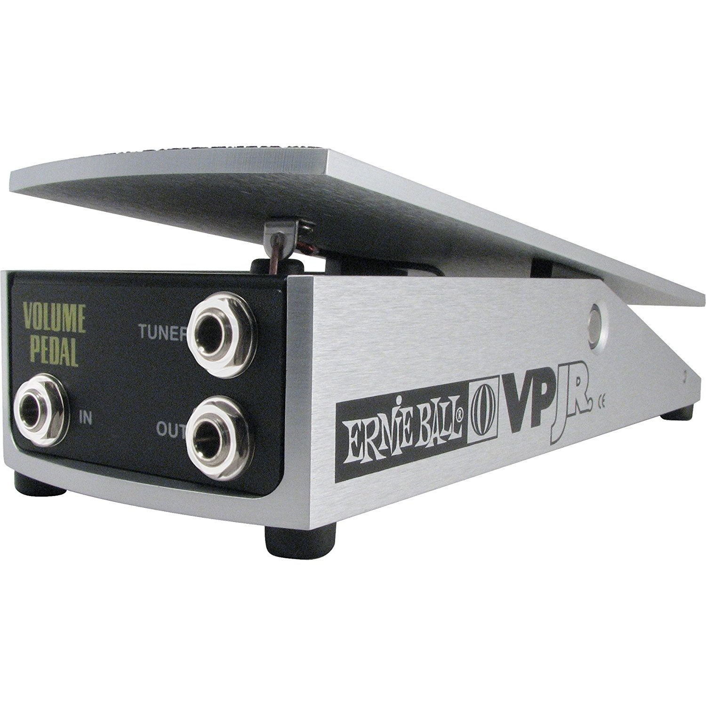

|  |
Ernie Ball Volume Pedal The Ernie Ball VP Jr 250k provides all the same great features as our original volume pedal while reducing your footprint by 22%. The VP 250k Jr is perfectly voiced for passive signals and features a compact, rugged design consisting of aircraft grade aluminum housing that is virtually indestructible. Directly behind the input jack under the footplate is a micro taper switch which provides the user two distinct volume swell rates. |